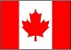
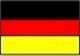
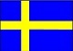
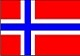
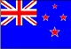
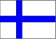

|  |  |  |  |  |  |
Noruega
O país europeu está sempre entre as primeiras posições de diversos rankings. É um dos países mais desenvolvidos do mundo, possui uma renda per capita muito alta, educação de qualidade, equilíbrio entre a vida pessoal e o trabalho e muito engajamento cívico entre seus moradores. Além de ser um dos países mais bonitos do mundo, a Noruega possui índices de criminalidade extremamente baixos, e está entre os 5 países mais felizes do mundo. E de acordo com dados de desenvolvimento humano da ONU, que medem a qualidade de vida de uma nação, o país tem ficado entre os primeiros lugares neste quesito nos últimos doze anos.
Curiosidades sobre a Noruega:
- Noruega em norueguês significa “Caminho para o Norte”. O que faz sentido, já que o país está localizado bem próximo do Círculo Polar Ártico, região norte do planeta.
- Na Noruega você pode beber água da torneira ou da pia em qualquer lugar, pois a água é de alto teor de pureza e com baixo teor mineral e sódio, ou seja muito leve e limpa. Uma das águas mais puras do mundo!
- Aos domingos dificilmente você encontrará alguma loja, mercado ou farmácia abertos. E aos sábados os shoppings fecham normalmente as 18:00. Por isso é importante planejar suas compras durante a semana. Aproveite o domingo para passear ao ar livre. Tem sempre atividades interessantes, mesmo no inverno.
- A venda de cervejas no mercados tem horários limitados, só é permitida de 2ª a 6ª até as 20:00, aos sábados somente até as 18hs, e domingos é proibido. Demais bebidas, como vinho e destilados são vendidas apenas nas lojas de monopólio do governo, chamada Vinmonopolet, os horários de funcionamento são de 2ª a 6ª até 18:00 e aos sábados até as 15:00.
- A cidade mais chuvosa da Europa fica na Noruega , a belíssima cidade de Bergen, com uma média de 250 dias de chuva por ano. Por isso é bom ter uma capa ou casaco a prova d’água,quando for visitar a cidade. A Gi até fez um vídeo sobre o que visitar em Bergen, veja que legal!
- O preço do combustível está entre os mais altos do mundo, mesmo a Noruega sendo referência na aérea do Petróleo. É uma forma de incentiva o uso de transporte público, que aliás, é super funcional.
- O queijo mais popular da Noruega é feito de leite de cabra e tem um gosto adocicado e uma cor escura.
- O horário de trabalho durante o inverno é de 08:00 as 16:00. Já no verão a jornada de trabalho é de 08:00 as 15:00, uma medida para que as pessoas possam aproveitar melhor esta época do ano;
- Os noruegueses só vão ao médico em caso de real necessidade. As farmácias não vendem remédios sem receita médica, apenas alguns poucos como paracetamol. A receita médica é online, ou seja, quando você vai ao médico e ele te receita algo, você só precisa ir a farmácia e dar seu número de identificação pessoal e pronto, sua receita está lá bonitinha te esperando.
- A língua oficial da Noruega é o norueguês mas existem também vários dialetos em diferentes regiões do país. O bokmål é a linguagem mais falada, mas cada região tem seu dialeto específico
- A caça e consumo de carne de baleia é permitida no país. Estima-se que 600 baleias são mortas por ano para o consumo humano. Se você for a um restaurante japonês é possível comer um sushi de baleia por exemplo. Outras carnes exóticas para nós mas comuns nar Norueuga são as carnes de alce, rena e veado.
- A Noruega é o país com maior IDH (Indice de Desenvolvimento Humano) do mundo.
- A licença maternidade é de até 1 ano para a mãe e de 3 meses para os pais. Por isso é muito comum ver pais passeando com os carrinhos de bebê durante a semana pelas ruas;
- Os impostos pagos na Noruega são um dos mais altos do mundo. Contudo o país conta com um sistema de transporte público extremamente eficiente e pontual. As escolas são públicas e abrigam alunos de diferentes classes sociais, o filho do príncipe estuda na mesma escola do que o filho do eletricista. Sem falar nos hospitais públicos que oferecem um ótimo atendimento.
- Para finalizar os fjordes da Noruega são conhecidos por serem uma das paisagens mais impressionantes do mundo. Um lugar que com certeza merece uma visita!
Copyright 2018 - by Gustavo Pereira 5141686